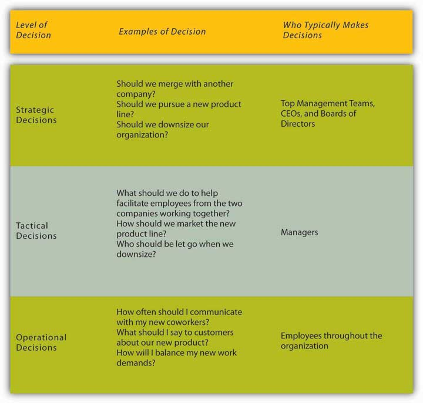
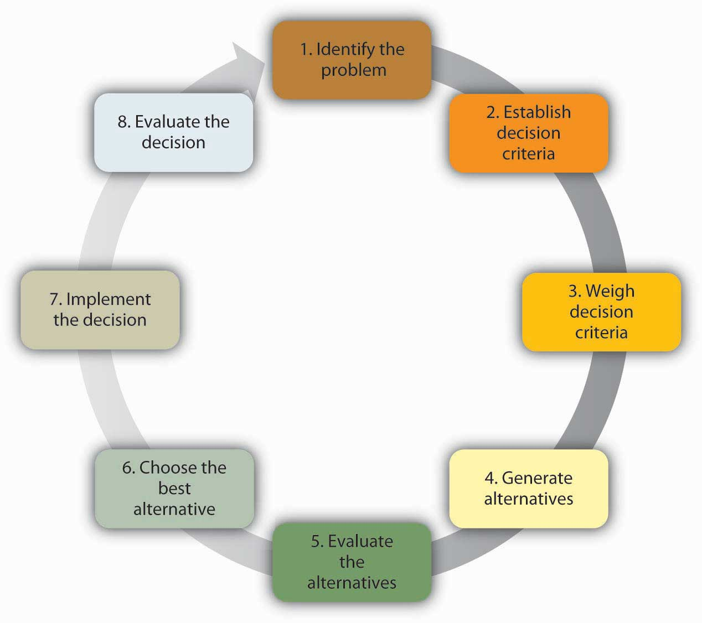
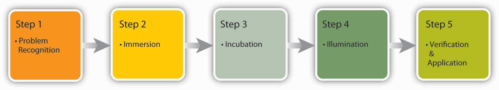
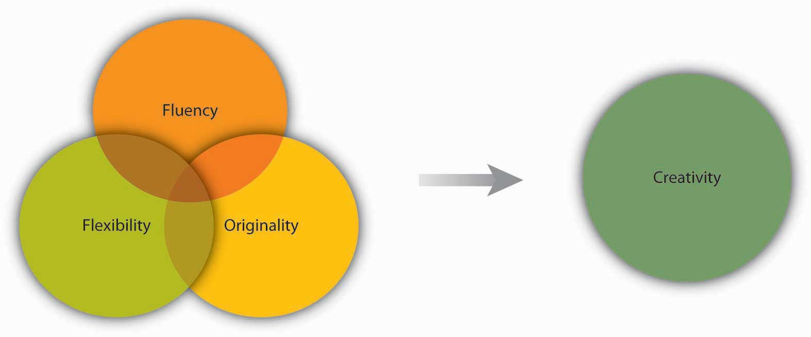
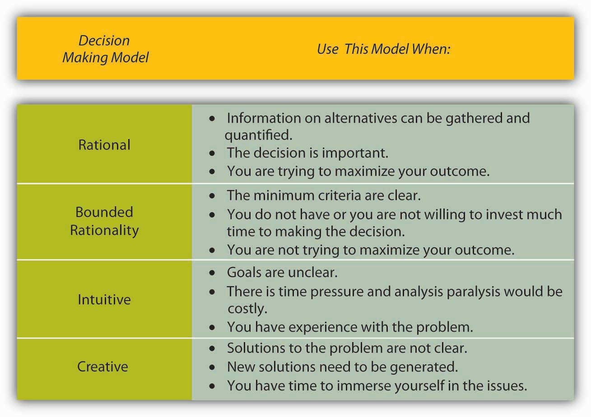

Decision makingMaking choices among alternative courses of action, including inaction. refers to making choices among alternative courses of action—which may also include inaction. While it can be argued that management is decision making, half of the decisions made by managers within organizations fail.Ireland, R. D., & Miller, C. C. (2004). Decision making and firm success. Academy of Management Executive, 18, 8–12; Nutt, P. C. (2002). Why decisions fail. San Francisco: Berrett-Koehler; Nutt, P. C. (1999). Surprising but true: Half the decisions in organizations fail. Academy of Management Executive, 13, 75–90. Therefore, increasing effectiveness in decision making is an important part of maximizing your effectiveness at work. This chapter will help you understand how to make decisions alone or in a group while avoiding common decision-making traps.
Individuals throughout organizations use the information they gather to make a wide range of decisions. These decisions may affect the lives of others and change the course of an organization. For example, the decisions made by executives and consulting firms for Enron ultimately resulted in a $60 billion loss for investors, thousands of employees without jobs, and the loss of all employee retirement funds. But Sherron Watkins, a former Enron employee and now-famous whistleblower, uncovered the accounting problems and tried to enact change. Similarly, the decisions made by firms to trade in mortgage-backed securities is having negative consequences for the entire U.S. economy. Each of these people made a decision, and each person, as well as others, is now living with the consequences of his or her decisions.
Because many decisions involve an ethical component, one of the most important considerations in management is whether the decisions you are making as an employee or manager are ethical. Here are some basic questions you can ask yourself to assess the ethics of a decision.Adapted from ideas contained in Blanchard, K., & Peale, N. V. (1988). The power of ethical management. New York: William Morrow.
Despite the far-reaching nature of the decisions in the previous example, not all decisions have major consequences or even require a lot of thought. For example, before you come to class, you make simple and habitual decisions such as what to wear, what to eat, and which route to take as you go to and from home and school. You probably do not spend much time on these mundane decisions. These types of straightforward decisions are termed programmed decisions;Decisions that occur frequently enough that we develop an automated response to them. these are decisions that occur frequently enough that we develop an automated response to them. The automated response we use to make these decisions is called the decision ruleAutomated responses used to make programmed decisions.. For example, many restaurants face customer complaints as a routine part of doing business. Because this is a recurring problem for restaurants, it may be regarded as a programmed decision. To deal with this problem, the restaurant might have a policy stating that every time they receive a valid customer complaint, the customer should receive a free dessert, which represents a decision rule. Making strategic, tactical, and operational decisions is an integral part of the planning function in the P-O-L-C (planning-organizing-leading-controlling) model.
However, decisions that are unique and important require conscious thinking, information gathering, and careful consideration of alternatives. These are called nonprogrammed decisionsUnique, nonroutine, and important decisions that require conscious thinking, information gathering, and careful consideration of alternatives.. For example, in 2005, McDonald’s became aware of a need to respond to growing customer concerns regarding foods high in fat and calories. This is a nonprogrammed decision because for several decades, customers of fast-food restaurants were more concerned with the taste and price of the food, rather than the healthiness. In response, McDonald’s decided to offer healthier alternatives, such as substituting apple slices in Happy Meals for French fries and discontinuing the use of trans fats. A crisis situation also constitutes a nonprogrammed decision for companies. For example, the leadership of Nutrorim was facing a tough decision. They had recently introduced a new product, ChargeUp with Lipitrene, an improved version of their popular sports drink powder, ChargeUp. But a phone call came from a state health department to inform them that several cases of gastrointestinal distress had been reported after people consumed the new product. Nutrorim decided to recall ChargeUp with Lipitrene immediately. Two weeks later, it became clear that the gastrointestinal problems were unrelated to ChargeUp with Lipitrene. However, the damage to the brand and to the balance sheets was already done. This unfortunate decision caused Nutrorim to rethink the way decisions were made under pressure so that they now gather information to make informed choices even when time is of the essence.Garvin, D. A. (2006, January). All the wrong moves. Harvard Business Review, 18–23.
Figure 11.5
To ensure consistency around the globe such as at this St. Petersburg, Russia, location, McDonald’s trains all restaurant managers (over 65,000 so far) at Hamburger University where they take the equivalent of two years of college courses and learn how to make decisions. The curriculum is taught in 28 languages.
Decision making can also be classified into three categories based on the level at which they occur. Strategic decisions set the course of organization. Tactical decisions are decisions about how things will get done. Finally, operational decisions are decisions that employees make each day to run the organization. For example, remember the restaurant that routinely offers a free dessert when a customer complaint is received. The owner of the restaurant made a strategic decision to have great customer service. The manager of the restaurant implemented the free dessert policy as a way to handle customer complaints, which is a tactical decision. And, the servers at the restaurant are making individual decisions each day evaluating whether each customer complaint received is legitimate to warrant a free dessert.
Figure 11.6 Decisions Commonly Made within Organizations
In this chapter, we are going to discuss different decision-making models designed to understand and evaluate the effectiveness of nonprogrammed decisions. We will cover four decision-making approaches starting with the rational decision-making model, moving to the bounded rationality decision-making model, the intuitive decision-making model, and ending with the creative decision-making model.
The rational decision-making modelA decision making model which describes the series of steps that decision makers should consider if their goal is to maximize their outcome. describes a series of steps that decision makers should consider if their goal is to maximize the quality of their outcomes. In other words, if you want to make sure you make the best choice, going through the formal steps of the rational decision-making model may make sense.
Let’s imagine that your old, clunky car has broken down and you have enough money saved for a substantial down payment on a new car. It is the first major purchase of your life, and you want to make the right choice. The first step, therefore, has already been completed—we know that you want to buy a new car. Next, in step 2, you’ll need to decide which factors are important to you. How many passengers do you want to accommodate? How important is fuel economy to you? Is safety a major concern? You only have a certain amount of money saved, and you don’t want to take on too much debt, so price range is an important factor as well. If you know you want to have room for at least five adults, get at least 20 miles per gallon, drive a car with a strong safety rating, not spend more than $22,000 on the purchase, and like how it looks, you’ve identified the decision criteria. All of the potential options for purchasing your car will be evaluated against these criteria.
Before we can move too much further, you need to decide how important each factor is to your decision in step 3. If each is equally important, then there is no need to weight them, but if you know that price and gas mileage are key factors, you might weight them heavily and keep the other criteria with medium importance. Step 4 requires you to generate all alternatives about your options. Then, in step 5, you need to use this information to evaluate each alternative against the criteria you have established. You choose the best alternative (step 6) and you go out and buy your new car (step 7).
Of course, the outcome of this decision will be related to the next decision made; that is where the evaluation in step 8 comes in. For example, if you purchase a car but have nothing but problems with it, you are unlikely to consider the same make and model in purchasing another car the next time!
Figure 11.8 Steps in the Rational Decision-Making Model
While decision makers can get off track during any of these steps, research shows that limiting the search for alternatives in the fourth step can be the most challenging and lead to failure. In fact, one researcher found that no alternative generation occurred in 85% of the decisions studied.Nutt, P. C. (1994). Types of organizational decision processes. Administrative Science Quarterly, 29, 414–550. Conversely, successful managers are clear about what they want at the outset of the decision-making process, set objectives for others to respond to, carry out an unrestricted search for solutions, get key people to participate, and avoid using their power to push their perspective.Nutt, P. C. (1998). Surprising but true: Half the decisions in organizations fail. Academy of Management Executive, 13, 75–90.
The rational decision-making model has important lessons for decision makers. First, when making a decision you may want to make sure that you establish your decision criteria before you search for all alternatives. This would prevent you from liking one option too much and setting your criteria accordingly. For example, let’s say you started browsing for cars before you decided your decision criteria. You may come across a car that you think really reflects your sense of style and make an emotional bond with the car. Then, because of your love for this car, you may say to yourself that the fuel economy of the car and the innovative braking system are the most important criteria. After purchasing it, you may realize that the car is too small for all of your friends to ride in the back seat when you and your brother are sitting in front, which was something you should have thought about! Setting criteria before you search for alternatives may prevent you from making such mistakes. Another advantage of the rational model is that it urges decision makers to generate all alternatives instead of only a few. By generating a large number of alternatives that cover a wide range of possibilities, you are likely to make a more effective decision in which you do not need to sacrifice one criterion for the sake of another.
Despite all its benefits, you may have noticed that this decision-making model involves a number of unrealistic assumptions. It assumes that people understand what decision is to be made, that they know all their available choices, that they have no perceptual biases, and that they want to make optimal decisions. Nobel Prize–winning economist Herbert Simon observed that while the rational decision-making model may be a helpful tool for working through problems, it doesn’t represent how decisions are frequently made within organizations. In fact, Simon argued that it didn’t even come close!
Think about how you make important decisions in your life. Our guess is that you rarely sit down and complete all eight steps in the rational decision-making model. For example, this model proposed that we should search for all possible alternatives before making a decision, but this can be time consuming and individuals are often under time pressure to make decisions. Moreover, even if we had access to all the information, it could be challenging to compare the pros and cons of each alternative and rank them according to our preferences. Anyone who has recently purchased a new laptop computer or cell phone can attest to the challenge of sorting through the different strengths and limitations of each brand, model, and plans offered for support and arriving at the solution that best meets their needs.
In fact, the availability of too much information can lead to analysis paralysisA decision-making process where more and more time is spent on gathering information and thinking about it but no decisions actually get made., where more and more time is spent on gathering information and thinking about it, but no decisions actually get made. A senior executive at Hewlett-Packard admits that his company suffered from this spiral of analyzing things for too long to the point where data gathering led to “not making decisions, instead of us making decisions.”Zell, D. M., Glassman, A. M., & Duron, S. A. (2007). Strategic management in turbulent times: The short and glorious history of accelerated decision making at Hewlett-Packard. Organizational Dynamics, 36, 93–104. Moreover, you may not always be interested in reaching an optimal decision. For example, if you are looking to purchase a house, you may be willing and able to invest a great deal of time and energy to find your dream house, but if you are looking for an apartment to rent for the academic year, you may be willing to take the first one that meets your criteria of being clean, close to campus, and within your price range.
The bounded rationality modelA model that recognizes the limitations of decision-making processes. According to this model, individuals knowingly limit their options to a manageable set and choose the best alternative without conducting an exhaustive search for alternatives. of decision making recognizes the limitations of our decision-making processes. According to this model, individuals knowingly limit their options to a manageable set and choose the best alternative without conducting an exhaustive search for alternatives. An important part of the bounded rationality approach is the tendency to satisficeAccepting the first alternative that meets minimum criteria., which refers to accepting the first alternative that meets your minimum criteria. For example, many college graduates do not conduct a national or international search for potential job openings; instead, they focus their search on a limited geographic area and tend to accept the first offer in their chosen area, even if it may not be the ideal job situation. Satisficing is similar to rational decision making, but it differs in that rather than choosing the best choice and maximizing the potential outcome, the decision maker saves time and effort by accepting the first alternative that meets the minimum threshold.
The intuitive decision-making modelArriving at decisions without conscious reasoning. The model argues that in a given situation, experts making decisions scan the environment for cues to recognize patterns. has emerged as an important decision-making model. It refers to arriving at decisions without conscious reasoning. Eighty-nine percent of managers surveyed admitted to using intuition to make decisions at least sometimes, and 59% said they used intuition often.Burke, L. A., & Miller, M. K. (1999). Taking the mystery out of intuitive decision making. Academy of Management Executive, 13, 91–98. When we recognize that managers often need to make decisions under challenging circumstances with time pressures, constraints, a great deal of uncertainty, highly visible and high-stakes outcomes, and within changing conditions, it makes sense that they would not have the time to formally work through all the steps of the rational decision-making model. Yet when CEOs, financial analysts, and healthcare workers are asked about the critical decisions they make, seldom do they attribute success to luck. To an outside observer, it may seem like they are making guesses as to the course of action to take, but it turns out that they are systematically making decisions using a different model than was earlier suspected. Research on life-or-death decisions made by fire chiefs, pilots, and nurses finds that these experts do not choose among a list of well-thought-out alternatives. They don’t decide between two or three options and choose the best one. Instead, they consider only one option at a time. The intuitive decision-making model argues that, in a given situation, experts making decisions scan the environment for cues to recognize patterns.Breen, B. (2000, August), “What’s your intuition?” Fast Company, 290; Klein, G. (2003). Intuition at work. New York: Doubleday; Salas, E., & Klein, G. (2001). Linking expertise and naturalistic decision making. Mahwah, NJ: Lawrence Erlbaum. Once a pattern is recognized, they can play a potential course of action through to its outcome based on their prior experience. Due to training, experience, and knowledge, these decision makers have an idea of how well a given solution may work. If they run through the mental model and find that the solution will not work, they alter the solution and retest it before setting it into action. If it still is not deemed a workable solution, it is discarded as an option and a new idea is tested until a workable solution is found. Once a viable course of action is identified, the decision maker puts the solution into motion. The key point is that only one choice is considered at a time. Novices are not able to make effective decisions this way because they do not have enough prior experience to draw upon.
In addition to the rational decision making, bounded rationality models, and intuitive decision making, creative decision making is a vital part of being an effective decision maker. CreativityThe generation of new ideas. is the generation of new, imaginative ideas. With the flattening of organizations and intense competition among organizations, individuals and organizations are driven to be creative in decisions ranging from cutting costs to creating new ways of doing business. Please note that, while creativity is the first step in the innovation process, creativity and innovation are not the same thing. Innovation begins with creative ideas, but it also involves realistic planning and follow-through.
The five steps to creative decision making are similar to the previous decision-making models in some keys ways. All of the models include problem identificationThe step in which the need for problem solving becomes apparent., which is the step in which the need for problem solving becomes apparent. If you do not recognize that you have a problem, it is impossible to solve it. ImmersionThe step where the decision maker thinks about the problem consciously and gathers information. is the step in which the decision maker thinks about the problem consciously and gathers information. A key to success in creative decision making is having or acquiring expertise in the area being studied. Then, incubationThe step when the decision maker sets the problem aside and does not think about it for a while. occurs. During incubation, the individual sets the problem aside and does not think about it for a while. At this time, the brain is actually working on the problem unconsciously. Then comes illuminationThe insight moment, when the solution to the problem becomes apparent. or the insight moment, when the solution to the problem becomes apparent to the person, usually when it is least expected. This is the “eureka” moment similar to what happened to the ancient Greek inventor Archimedes, who found a solution to the problem he was working on while he was taking a bath. Finally, the verification and applicationThe stage when the decision maker consciously verifies the feasibility of the solution and implements the decision. stage happens when the decision maker consciously verifies the feasibility of the solution and implements the decision.
A NASA scientist describes his decision-making process leading to a creative outcome as follows: He had been trying to figure out a better way to de-ice planes to make the process faster and safer. After recognizing the problem, he had immersed himself in the literature to understand all the options, and he worked on the problem for months trying to figure out a solution. It was not until he was sitting outside of a McDonald’s restaurant with his grandchildren that it dawned on him. The golden arches of the “M” of the McDonald’s logo inspired his solution: he would design the de-icer as a series of M’s!Interview by author Talya Bauer at Ames Research Center, Mountain View, CA, 1990. This represented the illumination stage. After he tested and verified his creative solution, he was done with that problem except to reflect on the outcome and process.
Figure 11.9 The Creative Decision-Making Process
Researchers focus on three factors to evaluate the level of creativity in the decision-making process. FluencyThe number of ideas a person is able to generate. refers to the number of ideas a person is able to generate. FlexibilityHow different the ideas are from one another. If decision makers are able to generate several unique solutions to a problem, they are high on flexibility. refers to how different the ideas are from one another. If you are able to generate several distinct solutions to a problem, your decision-making process is high on flexibility. OriginalityHow unique a person’s ideas are. refers to an idea’s uniqueness. You might say that Reed Hastings, founder and CEO of Netflix, is a pretty creative person. His decision-making process shows at least two elements of creativity. We do not exactly know how many ideas he had over the course of his career, but his ideas are fairly different from one another. After teaching math in Africa with the Peace Corps, Hastings was accepted at Stanford University, where he earned a master’s degree in computer science. Soon after starting work at a software company, he invented a successful debugging tool, which led to his founding the computer troubleshooting company Pure Software in 1991. After a merger and the subsequent sale of the resulting company in 1997, Hastings founded Netflix, which revolutionized the DVD rental business through online rentals with no late fees. In 2007, Hastings was elected to Microsoft’s board of directors. As you can see, his ideas are high in originality and flexibility. Conlin, M. (2007, September 14). Netflix: Recruiting and retaining the best talent. Business Week Online. Retrieved March 1, 2008, from http://www.businessweek.com/managing/content/sep2007/ca20070913_564868.htm?campaign_id=rss_null.
Figure 11.10 Dimensions of Creativity
Some experts have proposed that creativity occurs as an interaction among three factors: (1) people’s personality traits (openness to experience, risk taking), (2) their attributes (expertise, imagination, motivation), and (3) the context (encouragement from others, time pressure, and physical structures).Amabile, T. M. (1988). A model of creativity and innovation in organizations. In B. M. Staw & L. L. Cummings (Eds.), Research in Organizational Behavior, 10 123–167 Greenwich, CT: JAI Press; Amabile, T. M., Conti, R., Coon, H., Lazenby, J., & Herron, M. (1996). Assessing the work environment for creativity. Academy of Management Journal, 39, 1154–1184; Ford, C. M., & Gioia, D. A. (2000). Factors influencing creativity in the domain of managerial decision making. Journal of Management, 26, 705–732; Tierney, P., Farmer, S. M., & Graen, G. B. (1999). An examination of leadership and employee creativity: The relevance of traits and relationships. Personnel Psychology, 52, 591–620; Woodman, R. W., Sawyer, J. E., & Griffin, R. W. (1993). Toward a theory of organizational creativity. Academy of Management Review, 18, 293–321. For example, research shows that individuals who are open to experience, are less conscientious, more self-accepting, and more impulsive, tend to be more creative.Feist, G. J. (1998). A meta-analysis of personality in scientific and artistic creativity. Personality and Social Psychology Review, 2, 290–309.
There are many techniques available that enhance and improve creativity. Linus Pauling, the Nobel prize winner who popularized the idea that vitamin C could help build the immunity system, said, “The best way to have a good idea is to have a lot of ideas.” One popular way to generate ideas is to use brainstorming. BrainstormingA process of generating ideas that follows a set of guidelines, which includes no criticism of ideas during the process, the idea that no suggestion is too crazy, and building on other ideas (piggybacking). is a group process of generated ideas that follows a set of guidelines that include no criticism of ideas during the brainstorming process, the idea that no suggestion is too crazy, and building on other ideas (piggybacking). Research shows that the quantity of ideas actually leads to better idea quality in the end, so setting high idea quotasA set number of ideas a group must reach before they are done with brainstorming. where the group must reach a set number of ideas before they are done, is recommended to avoid process loss and to maximize the effectiveness of brainstorming. Another unique aspect of brainstorming is that the more people are included in brainstorming, the better the decision outcome will be because the variety of backgrounds and approaches give the group more to draw from. A variation of brainstorming is wildstormingA variation of brainstorming where the group focuses on ideas that are impossible and then imagines what would need to happen to make them possible. where the group focuses on ideas that are impossible and then imagines what would need to happen to make them possible.Scott, G., Leritz, L. E., & Mumford, M. D. (2004). The effectiveness of creativity training: A quantitative review. Creativity Research Journal, 16, 361–388.
We have seen that organizational creativity is vital to organizations. Here are some guidelines for enhancing organizational creativity within teams.Adapted from ideas in Amabile, T. M. (1998). How to kill creativity. Harvard Business Review, 76, 76–87; Gundry, L. K., Kickul, J. R., & Prather, C. W. (1994). Building the creative organization. Organizational Dynamics, 22, 22–37; Keith, N., & Frese, M. (2008). Effectiveness of error management training: A meta-analysis. Journal of Applied Psychology, 93, 59–69; Pearsall, M. J., Ellis, A. P. J., & Evans, J. M. (2008). Unlocking the effects of gender faultlines on team creativity: Is activation the key? Journal of Applied Psychology, 93, 225–234; Thompson, L. (2003). Improving the creativity of organizational work groups. Academy of Management Executive, 17, 96–109.
And finally, avoiding groupthink can be an important skill to learn.Adapted and expanded from “Six recommendations for avoiding Groupthink” in Janis, I. L. (1972). Victims of groupthink. New York: Houghton Mifflin; Whyte, G. (1991). Decision failures: Why they occur and how to prevent them. Academy of Management Executive, 5, 23–31.
The four different decision-making models—rational, bounded rationality, intuitive, and creative—vary in terms of how experienced or motivated a decision maker is to make a choice. Choosing the right approach will make you more effective at work and improve your ability to carry out all the P-O-L-C functions.
Figure 11.11
Which decision-making model should I use?
Decision making is choosing among alternative courses of action, including inaction. There are different types of decisions, ranging from automatic, programmed decisions to more intensive nonprogrammed decisions. Structured decision-making processes include rational decision making, bounded rationality, intuitive, and creative decision making. Each of these can be useful, depending on the circumstances and the problem that needs to be solved.


{kind=link}